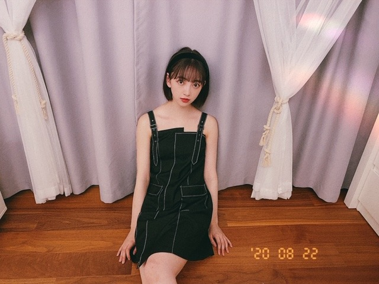

2020/0825Tueわたしがトキメク服を着たい♡
今日は
いろんなコーディネート載せます！
かわいい洋服をきるとハッピーになれるので
たくさんのジャンルの服に挑戦したいです！

brand...stella_tokyo
one-piece...IENA
前のブログで紹介した服↓
チョーカーネックレスはネットで買いました！
夏もそろそろ終わり、
秋冬服になるので秋冬服をチェックしつつ
まだまだ残りの夏を好きな洋服で彩りたいと思います
ちなみに今日は
サンローランのtシャツに
ロングパンツ、スニーカー。ラフです。
ラフも好きーーーーー
基本柄はシンプルでデザインは個性的なのがすきです
また更新します☺︎
あ、そうそう
らんぜまる、レス早くてびっくりしました！
ビビリなのね。知ってた。
わたしもだけどらんぜもなかなかよね。笑
前にうちの玄関前に虫がいて
2人で大騒ぎして30分くらい家に入れなくて
大変でした。笑
いつかお化けやしき2人で行こう。笑
らんぜまるはいつもメールの返信も早くてね〜
そして実はよくプライベート一緒に過ごすことが
おおくて。プールとかも昔行ったな〜
今年は無理だったけど
落ち着いたらまたお出かけしようね
ではは
2020/08/25 17:30
コメント(264)
未央奈さんブログ更新してくれてありがとうございます。未央奈さんの(*^o^)／＼(^-^*)はきいちゃん、絢音、まいちゅん、星野みなみちゃんだと思ったけど蘭世さんとも仲良し で 。れなちさんは仲良し？蘭世さん返事早かったね。未央奈さんはキレた事が無いとYouTubeの乃木どこで見てなんて良い性格なの？と思いました。明日のFNS夏祭り楽しみです。未央奈さんコロナと熱中症に気を付けて頑張って過ごして下さい。
堀ちゃん、ブログ更新ありがとう〜
堀ちゃん、一段とお美しいです！
惚れ直しました！
堀ちゃん、大好きだよー
堀ちゃん、一段とお美しいです！
惚れ直しました！
堀ちゃん、大好きだよー
未央奈ちゃん。ブログ更新ありがとう！いろいろなコーデありがとう。わたしは、2番目3番目のコーデがすきです。
未央奈〜
今日も可愛いよー
応援しとるよー^ ^
今日も可愛いよー
応援しとるよー^ ^
こんばんはっ♪
いつもモバメにブログ更新ありがとう＼(^-^)／
柴咲コウさん確かに綺麗だよねー。でも未央奈もすごく綺麗な女性って思うよ。もちろん可愛いさもね。
おすすめの映画かぁ、幅広いね。
結構むかしのやつだけど、マスクって映画面白くて好きな作品だから観たことなかったら観てみてー。
わぁ～どの服装の未央奈も可愛いし似合ってる♪
あと未央奈は首～デコルテのラインすごい綺麗だよね～(*/□＼*)
でもIENAの服着てる写真の未央奈がめっちゃ好き。表情とか髪型に服装の雰囲気も全部。
たまに載せてくれるラフでシンプル未央奈も好き。
楽だし良いよねー。
らんぜまるレス早かったね！(゜▽゜*)
そんなにビビり同士なんだw
2人でお化け屋敷ぜひ実現してほしいー！
やっぱ富士急かな？プライベートであそこのお化け屋敷に行くのはなかなか勇者だよねw(^-^;)
特に仲良しなのが絢音ちゃんやみり愛とかのイメージが結構あったけど、みおなまるとらんぜまるもプライベートもよく一緒に過ごしてたんだね☆
ほんとにまた普通にお出かけできるようになると良いね！それこそ、のぎたびみたいに2人で旅行とかも(⌒‐⌒)
明日はFNSだよね！最近たくさん乃木坂ちゃん、未央奈をテレビで観れて嬉しいな！
いつもモバメにブログ更新ありがとう＼(^-^)／
柴咲コウさん確かに綺麗だよねー。でも未央奈もすごく綺麗な女性って思うよ。もちろん可愛いさもね。
おすすめの映画かぁ、幅広いね。
結構むかしのやつだけど、マスクって映画面白くて好きな作品だから観たことなかったら観てみてー。
わぁ～どの服装の未央奈も可愛いし似合ってる♪
あと未央奈は首～デコルテのラインすごい綺麗だよね～(*/□＼*)
でもIENAの服着てる写真の未央奈がめっちゃ好き。表情とか髪型に服装の雰囲気も全部。
たまに載せてくれるラフでシンプル未央奈も好き。
楽だし良いよねー。
らんぜまるレス早かったね！(゜▽゜*)
そんなにビビり同士なんだw
2人でお化け屋敷ぜひ実現してほしいー！
やっぱ富士急かな？プライベートであそこのお化け屋敷に行くのはなかなか勇者だよねw(^-^;)
特に仲良しなのが絢音ちゃんやみり愛とかのイメージが結構あったけど、みおなまるとらんぜまるもプライベートもよく一緒に過ごしてたんだね☆
ほんとにまた普通にお出かけできるようになると良いね！それこそ、のぎたびみたいに2人で旅行とかも(⌒‐⌒)
明日はFNSだよね！最近たくさん乃木坂ちゃん、未央奈をテレビで観れて嬉しいな！
ブログ更新ありがとう
未央奈かわいい
スキンケアってどうしてますか？
未央奈かわいい
スキンケアってどうしてますか？
仲良くしてる2期生の感じが大好きです！
蘭世ともまたいろいろお出かけできるようになるといいよね、
蘭世ともまたいろいろお出かけできるようになるといいよね、
更新待ってました〜！
どんな服でも似合っちゃう
未央奈ちゃん憧れる
次の更新も待ってるね〜
どんな服でも似合っちゃう
未央奈ちゃん憧れる
次の更新も待ってるね〜
未央奈ちゃんいつもブログ更新ありがとう！
さっきオススメの映画教えたよ！
さっきオススメの映画教えたよ！
更新ありがとうございます
とてもかわいいありがとうございます
とてもかわいいありがとうございます
らんぜまるとお化け屋敷行ったら、叫び声でお化けも叫んでカオスになりそう
私は、ときめく服に未だに出会ったことないなー
私は、ときめく服に未だに出会ったことないなー
ヤッホー未央奈ブログ更新ありがと➰きのうの蘭世まるとの、、仲の良さ二期との仲がほうふつとされます❗いつまでも仲良くねー、、服装に合わせてメイクも表情も変えて、、あれ～未央奈かーというような一瞬思える可愛い顔の未央奈いろいろ楽しませてくれてありがと～❗でわでわこのあたりで未央奈の健康と46グループ全員の健康を祈っておやすみなさい大好きだよ～❗
こんばんは。セブンだよ(ฅ'ω'ฅ)♪
今日も1日お疲れさまです
1枚目の服好き！
個性的なデザインすごく好きです
アニメに出てきそうな服とかめっちゃ好き！
メンズ服はシンプルデザイン多いし
デザイン良い服はめっちゃ高かったりするので
レディース服買う時もあります
レディースはデザインも良いし値段も安いのでよきよき！
らんぜとのエピソードよきですね！
虫にビビる2人想像できる 笑
では、明日も1日楽しんで生きましょうd(@^∇ﾟ)/ﾌｧｲﾄｯ♪
o(ﾟ▽＾)ﾉｼまたねぃ♪
今日も1日お疲れさまです
1枚目の服好き！
個性的なデザインすごく好きです
アニメに出てきそうな服とかめっちゃ好き！
メンズ服はシンプルデザイン多いし
デザイン良い服はめっちゃ高かったりするので
レディース服買う時もあります
レディースはデザインも良いし値段も安いのでよきよき！
らんぜとのエピソードよきですね！
虫にビビる2人想像できる 笑
では、明日も1日楽しんで生きましょうd(@^∇ﾟ)/ﾌｧｲﾄｯ♪
o(ﾟ▽＾)ﾉｼまたねぃ♪
堀ちゃんには元気をもらってばっかりでありがたいかぎりです！
おしゃれな堀ちゃんカワイイですな!
モバメより!
おすすめ映画だけどどんなのがいいのかわからないからいっぱいのせとくね!
ストロボ・エッジ
ピーチガール
映画ひみつのアッコちゃん
3Dリアルガール
植物図鑑運命の恋ひろいました
パーフェクトワールド君といる奇跡
真夜中の五分前
僕だけがいない街
寄生獣
亜人
東京喰種トーキョーグール
テラフォーマーズ
MONSTERSモンスターズ
ジョジョの奇妙な冒険ダイヤモンドは砕けない
バクマン
あした世界が終わるとしても
以上です!
ではまたコメントおじゃまします♪
おしゃれな堀ちゃんカワイイですな!
モバメより!
おすすめ映画だけどどんなのがいいのかわからないからいっぱいのせとくね!
ストロボ・エッジ
ピーチガール
映画ひみつのアッコちゃん
3Dリアルガール
植物図鑑運命の恋ひろいました
パーフェクトワールド君といる奇跡
真夜中の五分前
僕だけがいない街
寄生獣
亜人
東京喰種トーキョーグール
テラフォーマーズ
MONSTERSモンスターズ
ジョジョの奇妙な冒険ダイヤモンドは砕けない
バクマン
あした世界が終わるとしても
以上です!
ではまたコメントおじゃまします♪
ブログありがとう！今日も可愛い♡
みおな、こんばんは！更新ありがとう。 近況報告ありがとうございます。 では、毎日みおなに良いこと沢山ありますように！ おやすみおな！！
こんばんは、未央奈ちゃん
どの写真もかわいいなぁ。
ちょっと時間があったら未央奈ちゃんの写真見て癒やされてるよ。
ありがとー
どの写真もかわいいなぁ。
ちょっと時間があったら未央奈ちゃんの写真見て癒やされてるよ。
ありがとー
未央奈ブログ更新ありがとう！
どの服も似合ってて可愛い！
可愛い洋服を着てる未央奈を見ると、僕もハッピーになれるから嬉しい。
肩も鎖骨も綺麗だからこういう服似合うね。
もしかしてカチューシャとかリボンの色を服に合わせてる？オシャレ！
ラフな格好も見たいなー。
蘭世と仲良いんだね。2期生の仲良いエピソードって良いなあ。
では！
どの服も似合ってて可愛い！
可愛い洋服を着てる未央奈を見ると、僕もハッピーになれるから嬉しい。
肩も鎖骨も綺麗だからこういう服似合うね。
もしかしてカチューシャとかリボンの色を服に合わせてる？オシャレ！
ラフな格好も見たいなー。
蘭世と仲良いんだね。2期生の仲良いエピソードって良いなあ。
では！
未央奈さん、ブログ更新ありがとう。どこにでもいるおっさんです。
蘭世、ほんとにレス早かったね。
メンバー同士のわちゃわちゃ大好きです。
ではは
ひでき
蘭世、ほんとにレス早かったね。
メンバー同士のわちゃわちゃ大好きです。
ではは
ひでき
ブログ更新ありがとう！
オシャレな服で素敵です！！
らんぜまるとの仲いい話大好きです！
オシャレな服で素敵です！！
らんぜまるとの仲いい話大好きです！
昨日バトルロワイアルを観たということで
「いつかギラギラする日」
「GONIN」
を紹介します
２作とも少し古い日本アクション映画ですが
個人的にはバトルロワイアルより面白かったです
気になったらyoutubeに予告があるのでチェック
してみて下さい
「いつかギラギラする日」
「GONIN」
を紹介します
２作とも少し古い日本アクション映画ですが
個人的にはバトルロワイアルより面白かったです
気になったらyoutubeに予告があるのでチェック
してみて下さい
キャミソールの様式が多くてやっぱり夏だなあぁって感じですね。
上から三枚目の写真、含み笑い?(日本語語彙力足りない、ごめん)の表情、赤ちゃんみたいかわいくて純真。好きです。
らんぜまるとプールへ行った。みおなさんは水泳上手なの?私は全然かなずち、この夏終わりまで泳げるといいなあ。
三十分大騒ぎで家に入れなかったって、どんだけ怖い虫か見たいですね、風の谷のナウシカでみたいな虫ですか、笑。早く上がってよとか家族に言われなかったの? 笑
上から三枚目の写真、含み笑い?(日本語語彙力足りない、ごめん)の表情、赤ちゃんみたいかわいくて純真。好きです。
らんぜまるとプールへ行った。みおなさんは水泳上手なの?私は全然かなずち、この夏終わりまで泳げるといいなあ。
三十分大騒ぎで家に入れなかったって、どんだけ怖い虫か見たいですね、風の谷のナウシカでみたいな虫ですか、笑。早く上がってよとか家族に言われなかったの? 笑
可愛すぎて何事ですか！！？
本当に憧れるなあ。未央奈ちゃんは私の憧れの女の子！
本当に憧れるなあ。未央奈ちゃんは私の憧れの女の子！
未央奈ー！こんばんはー！ブログありがとうだよ！
コメントするの遅くなってしまったごめん！！
今日は早朝から起きて富士山の麓の近くにあるゴルフ場に行ってきた！
少し標高が高くてすごく涼しかったよ！水道水がキンキンに冷えてて、富士山麓のお水がめっちゃ美味しかった！
やっぱり緑の中に行くことも大切だね！
大自然に囲まれて一日を過ごす事が出来て本当に幸せだったよ！
未央奈も岐阜県に行ったり首都圏の近くにある緑に囲まれて美味しい水を飲んだらより健康的になって心身ともに良い感じになると思う！
ゴルフの後人生で初めて御殿場アウトレットに行ったの！
めっちゃ服を見た！大量購入しそうになってやめた笑
ブルックス、バーバリー、ポロ、とかのお洋服を未央奈いつか着てみて！絶対に似合うよ！
蘭世さんと未央奈が2人で話をしてるところをいつか見てみたい！
コメントするの遅くなってしまったごめん！！
今日は早朝から起きて富士山の麓の近くにあるゴルフ場に行ってきた！
少し標高が高くてすごく涼しかったよ！水道水がキンキンに冷えてて、富士山麓のお水がめっちゃ美味しかった！
やっぱり緑の中に行くことも大切だね！
大自然に囲まれて一日を過ごす事が出来て本当に幸せだったよ！
未央奈も岐阜県に行ったり首都圏の近くにある緑に囲まれて美味しい水を飲んだらより健康的になって心身ともに良い感じになると思う！
ゴルフの後人生で初めて御殿場アウトレットに行ったの！
めっちゃ服を見た！大量購入しそうになってやめた笑
ブルックス、バーバリー、ポロ、とかのお洋服を未央奈いつか着てみて！絶対に似合うよ！
蘭世さんと未央奈が2人で話をしてるところをいつか見てみたい！
おしゃれ番長～掘 未央奈

ファッションの世界は秋冬物だね～(^-^)
まだまだとてつもなく暑いけど(笑)
らんぜまるとの公開文通？良き(*^^*)
まだまだとてつもなく暑いけど(笑)
らんぜまるとの公開文通？良き(*^^*)
堀ちゃんこんばんは。
１枚目の写真はANNm10の名取裕子さん風にいうと「せくすうぃ〜」ですね。昨日のお嬢様風とのギャップが良いです。
１枚目の写真はANNm10の名取裕子さん風にいうと「せくすうぃ〜」ですね。昨日のお嬢様風とのギャップが良いです。
堀ちゃんは、綺麗で美しいです！！！
美への追求が素敵すぎます！
身体の維持ってどうしてますか？？？
レイ┏○ﾍﾟｺｯ。
美への追求が素敵すぎます！
身体の維持ってどうしてますか？？？
レイ┏○ﾍﾟｺｯ。
未央奈ちゃん今日もブログ更新ありがとー
服可愛すぎ❤️
本当に憧れます‼️
どんな服もうまく着こなせてて尊敬します❤️
いつか私も未央奈ちゃんが着てるような服が着たいです‼️
蘭世と仲良いんだね
メンバー同士が仲良いエピソードとか聞いたりするとすごい嬉しくなる♪
また更新するのを待っています‼️
ファイティン‼️
服可愛すぎ❤️
本当に憧れます‼️
どんな服もうまく着こなせてて尊敬します❤️
いつか私も未央奈ちゃんが着てるような服が着たいです‼️
蘭世と仲良いんだね
メンバー同士が仲良いエピソードとか聞いたりするとすごい嬉しくなる♪
また更新するのを待っています‼️
ファイティン‼️
更新ありがとう❤
未央奈ちゃんが着る服みんなかわいい～❤
その中でも僕は最初の写真の服が好き
またね
未央奈ちゃんが着る服みんなかわいい～❤
その中でも僕は最初の写真の服が好き
またね
らんぜまると
ブール昔､行ったの？
流れるプール？
それとも流れないプール？


ブール昔､行ったの？
流れるプール？
それとも流れないプール？
堀未央奈しか勝たん

ブログ更新ありがとう！最近暑くなってきたし、お互い体調に気を付けて頑張ろう！！次も絶対見るからね！
本当毎日ブログ更新ありがとー！
影でたくさん努力しているみおなが本当大好き！
早く握手会行きたい！
これからも応援してます！
大好き！
影でたくさん努力しているみおなが本当大好き！
早く握手会行きたい！
これからも応援してます！
大好き！
未央奈ちゃんブログ更新ありがとう！
さくらちゃんとあやめちゃんとでんちゃんと同じ愛知県出身の愛知の覇王です！
蓮加ちゃんと同じ高校2年生です！
昨日の乃木坂46weiboの配信見ました！
未央奈ちゃん、日奈子ちゃん、まいちゅん、3人ともRoute246の衣装を着ていて、びっくりしたし、めっちゃ可愛いかったです！
未央奈ちゃんの早口言葉、めっちゃ可愛いかったです！
髪を巻いてる未央奈ちゃん、久々に見ました！
明日のFNS歌謡祭楽しみにしてます！
これからもずっと応援するので、頑張ってください！
さくらちゃんとあやめちゃんとでんちゃんと同じ愛知県出身の愛知の覇王です！
蓮加ちゃんと同じ高校2年生です！
昨日の乃木坂46weiboの配信見ました！
未央奈ちゃん、日奈子ちゃん、まいちゅん、3人ともRoute246の衣装を着ていて、びっくりしたし、めっちゃ可愛いかったです！
未央奈ちゃんの早口言葉、めっちゃ可愛いかったです！
髪を巻いてる未央奈ちゃん、久々に見ました！
明日のFNS歌謡祭楽しみにしてます！
これからもずっと応援するので、頑張ってください！
未央奈さん、こんばんは
ファッションショー
見てるみたいで楽しい～
サマーセーター持っていましたら
着て頂きたいなぁf(^_^)
3枚目の表情がお気に入り
可愛らしい～(^_^)/
蘭世さんとお出かけできると
いいですね
残り少ないですが
夏を楽しみましょう(^_^)
ファッションショー
見てるみたいで楽しい～
サマーセーター持っていましたら
着て頂きたいなぁf(^_^)
3枚目の表情がお気に入り
可愛らしい～(^_^)/
蘭世さんとお出かけできると
いいですね
残り少ないですが
夏を楽しみましょう(^_^)
未央奈ちゃんこんばんは。
あいかわらず未央奈ちゃんは何着ても似合うしカワイイ！それにどの写真もデコルテが美しい！！見惚れちゃいますよ。
年々、可愛さを残しながらもどんどん美しくなっていく未央奈ちゃんを見ているのがホントに楽しいです。
あいかわらず未央奈ちゃんは何着ても似合うしカワイイ！それにどの写真もデコルテが美しい！！見惚れちゃいますよ。
年々、可愛さを残しながらもどんどん美しくなっていく未央奈ちゃんを見ているのがホントに楽しいです。
夏らしいコーデ、良いですね！
今だけの未央奈ちゃんが見られて嬉しいです♪
らんぜまるとのブログ通信、微笑ましいですね♪☆
今だけの未央奈ちゃんが見られて嬉しいです♪
らんぜまるとのブログ通信、微笑ましいですね♪☆
未央奈さんかわいい❤️
いつも可愛い写真をありがとうございます。
いつも可愛い写真をありがとうございます。
みおなっち、あらかわいい。
未央奈ちゃんブログ更新ありがとう！！
私服までオシャレでとっても可愛いです⸜❤︎⸝
今日モバメで送ってくれた時のお洋服可愛いな〜って思ってたはブログにも乗せてくれてうれしいです！！
ボブスタイルもアップスタイルも似合っちゃう未央奈ちゃんさすがです〜！！
洋服に合わせてメイクを少しづつ変えてたりする気がしてそこまで抜かりないのがすごいです本当に！
癒されました⸜❤︎⸝
蘭世ちゃんと未央奈ちゃんのコンビとっても好きです！
2人ともオシャレさんだからいつか2人の双子コーデとかも見てみたいです！
いつもありがとうございます
だいすき！
私服までオシャレでとっても可愛いです⸜❤︎⸝
今日モバメで送ってくれた時のお洋服可愛いな〜って思ってたはブログにも乗せてくれてうれしいです！！
ボブスタイルもアップスタイルも似合っちゃう未央奈ちゃんさすがです〜！！
洋服に合わせてメイクを少しづつ変えてたりする気がしてそこまで抜かりないのがすごいです本当に！
癒されました⸜❤︎⸝
蘭世ちゃんと未央奈ちゃんのコンビとっても好きです！
2人ともオシャレさんだからいつか2人の双子コーデとかも見てみたいです！
いつもありがとうございます
だいすき！
堀ちゃん、こんばんは＼(・ω・)／
洋服の写真、ありがとう！！
ふむふむ、さすがモデルのお仕事でもたくさん活躍しているだけあって、いい写真ばかりだね
暦の上ではもう夏は終わるけど、本当の勝負はこれからだよ
例年の様子を見ると、たぶん10月くらいまで暑い日が続くんじゃないかな。
虫ならまだマシだよ～。
僕の場合、小学生の時に家の入口の前でどこぞのおっきな犬が寝そべっていて、なかなかお家に入れなかったことあったよ。
これ、正面から対峙したらおそらくやられるな・・・って察した
洋服の写真、ありがとう！！
ふむふむ、さすがモデルのお仕事でもたくさん活躍しているだけあって、いい写真ばかりだね
暦の上ではもう夏は終わるけど、本当の勝負はこれからだよ
例年の様子を見ると、たぶん10月くらいまで暑い日が続くんじゃないかな。
虫ならまだマシだよ～。
僕の場合、小学生の時に家の入口の前でどこぞのおっきな犬が寝そべっていて、なかなかお家に入れなかったことあったよ。
これ、正面から対峙したらおそらくやられるな・・・って察した
今日もかわいすぎます、、、！
お洋服もメイクもみおなちゃんがしたいファッションをしてるときが１番輝いてます！！！
影響されてわたしもくすみブルーのお洋服たくさん買っちゃいました^ - ^
お体に気をつけてがんばってください！！大好きです！
お洋服もメイクもみおなちゃんがしたいファッションをしてるときが１番輝いてます！！！
影響されてわたしもくすみブルーのお洋服たくさん買っちゃいました^ - ^
お体に気をつけてがんばってください！！大好きです！
未央奈～ こんにちは
連日のブログ、更新ありがとうございます。
昨日のらんぜ、素早い反応でしたね。ブログの新しい利用法、開拓できましたね。
今日の写真もまたまたいいですね。「コディネート」は「こーでねえと」‥‥。
ところで、明日はFNS歌謡祭、今年の夏よく歌ってきた松田聖子ちゃんの「夏の扉」、楽しみにしていますよ。私にとって「３０年の青春」と「３０年ぶりの青春」がまさに同居する瞬間だと思います。というわけで、楽しみにしていますよ。
連日のブログ、更新ありがとうございます。
昨日のらんぜ、素早い反応でしたね。ブログの新しい利用法、開拓できましたね。
今日の写真もまたまたいいですね。「コディネート」は「こーでねえと」‥‥。
ところで、明日はFNS歌謡祭、今年の夏よく歌ってきた松田聖子ちゃんの「夏の扉」、楽しみにしていますよ。私にとって「３０年の青春」と「３０年ぶりの青春」がまさに同居する瞬間だと思います。というわけで、楽しみにしていますよ。
堀さん、こんばんは。
好きな服を着ると「気分が高まる」「ハッピーな気分になる」「心がときめく」などなど、幸せな気持ちになれるのはなぜなのでしょうね。服の生地の肌触りなのか、服の色あいなのか、はたまたデザインなのか。服飾の世界は奥が深いです。
まだ昼間は暑さ厳しい折ですが、それでも夜風の中に少しだけ秋の匂いが混ざっているような、そんな感じの夏の終わりです。もうすぐ涼風が立って秋がやってきます。シックな秋の装いに身を包むのも間もなくですね。九月よ来たれ！
寺田さんのレスポンスブログが早アップされていましたね。堀さんの「蘭世まる」呼びがまた佳し。
ではまたコメントします。おやすみなさい。
さらばだ、また会おう！（気球に乗って去りぬ〜）
好きな服を着ると「気分が高まる」「ハッピーな気分になる」「心がときめく」などなど、幸せな気持ちになれるのはなぜなのでしょうね。服の生地の肌触りなのか、服の色あいなのか、はたまたデザインなのか。服飾の世界は奥が深いです。
まだ昼間は暑さ厳しい折ですが、それでも夜風の中に少しだけ秋の匂いが混ざっているような、そんな感じの夏の終わりです。もうすぐ涼風が立って秋がやってきます。シックな秋の装いに身を包むのも間もなくですね。九月よ来たれ！
寺田さんのレスポンスブログが早アップされていましたね。堀さんの「蘭世まる」呼びがまた佳し。
ではまたコメントします。おやすみなさい。
さらばだ、また会おう！（気球に乗って去りぬ〜）
ときめいた〜。
ありがとう。
ありがとう。
あーかわいい。明日も頑張れそうです。
未央奈可愛すぎだろ…結婚しよーね
堀ちゃんブログ更新ありがとう
1枚目の写真の服がカッコイイ
2枚目3枚目の上着が堀ちゃんに
馴染んでいて可愛かったです！
早くらんぜまるとプライベートで
遊べることを願ってます
次のブログ更新も楽しみにしてます
1枚目の写真の服がカッコイイ
2枚目3枚目の上着が堀ちゃんに
馴染んでいて可愛かったです！
早くらんぜまるとプライベートで
遊べることを願ってます
次のブログ更新も楽しみにしてます


メンバーが他のメンバーと仲がいいことが私が乃木坂46をすきな理由の1つでもあるので嬉しいなあ
奈央